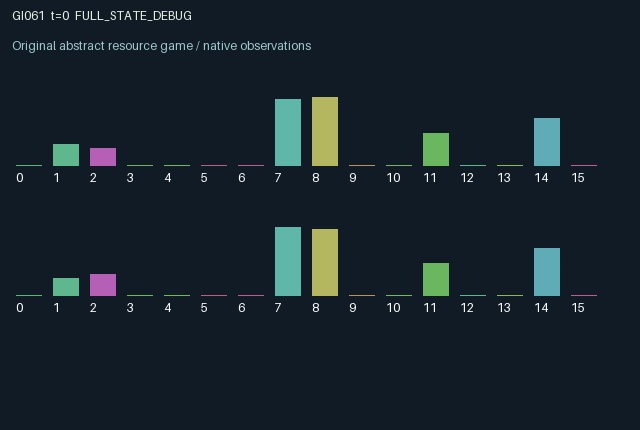

GI061 / LEGACY_ARRAY
astra-d2-00061: Thermal externalities with persistent wear and lockout hysteresis
2 agents5 actions16 observation columns32 original horizonRuntime: PASS
Release verification episode
Untrained uniform legal actions. Actual JAX state sampled along the full original episode; full-state debug camera. No human performance or learning claim.

Run this game
crucibles play --game 61
Start Python locally, then open the address printed by the terminal. Installation, multiplayer, takeover and keyboard controls →
Objective, rewards & ending
Exact task contract
{
"objective": "Accumulate original per-agent rewards under the interaction rules in mechanism.md.",
"natural_termination": "No early terminal; original t >= 32 horizon.",
"exact_transition_and_reward_source": "def raw_step(self, key, state, actions):\n idle = (actions == 0).astype(jnp.float32)\n service = (actions == 3).astype(jnp.float32)\n replenish = (actions == 4).astype(jnp.float32)\n requested = jnp.where(actions == 1, 0.4, jnp.where(actions == 2, 0.9, 0.0))\n spent = jnp.minimum(state[\"charge\"], requested) * jnp.logical_not(state[\"locked\"]).astype(jnp.float32)\n output = spent * (1.0 - 0.65 * state[\"wear\"])\n cooling = 0.14 * state[\"coolant\"] * (1.0 - 0.6 * state[\"clog\"])\n temperature = jnp.clip(\n 0.91 * state[\"temperature\"] + 0.32 * output\n + 0.22 * state[\"transport\"][::-1] + state[\"ambient\"]\n - cooling - 0.08 * idle,\n 0.0, 1.2,\n )\n wear = jnp.clip(\n state[\"wear\"] + 0.08 * jnp.maximum(temperature - 0.6, 0.0) - 0.16 * service,\n 0.0, 1.0,\n )\n locked = (temperature >= 0.9) | (state[\"locked\"] & (temperature > 0.35))\n coolant = jnp.clip(state[\"coolant\"] + 0.2 * jnp.sum(replenish) - 0.08 * jnp.sum(output) - 0.02, 0.0, 1.0)\n clog = jnp.clip(0.97 * state[\"clog\"] + 0.04 * jnp.sum(output) - 0.12 * jnp.sum(replenish), 0.0, 1.0)\n next_state = {\n \"t\": state[\"t\"] + jnp.array(1, dtype=jnp.int32),\n \"temperature\": temperature.astype(jnp.float32),\n \"wear\": wear.astype(jnp.float32),\n \"charge\": jnp.clip(state[\"charge\"] - spent + 0.16 * idle + 0.05 * service, 0.0, 1.0).astype(jnp.float32),\n \"locked\": locked,\n \"transport\": output.astype(jnp.float32),\n \"coolant\": coolant.astype(jnp.float32),\n \"clog\": clog.astype(jnp.float32),\n \"last_output\": output.astype(jnp.float32),\n \"ambient\": state[\"ambient\"],\n }\n rewards = jnp.clip(\n 0.65 * output - 0.1 * spent - 0.07 * service - 0.1 * replenish\n - 0.08 * locked.astype(jnp.float32),\n -1.0, 1.0,\n ).astype(jnp.float32)\n done_all = next_state[\"t\"] >= 32\n dones = jnp.full((2,), done_all, dtype=jnp.bool_)\n info = {\"done_all\": done_all, \"legal_mask\": self.legal_actions(next_state)}\n return self.observe(next_state), next_state, rewards, dones, info"
}Declared per-step reward bounds: -1.0 to 1.0. Observability: source_defined.
Rules
Original mechanism document (historical status wording retained)
# astra-d2-00061: Thermal externalities with persistent wear and lockout hysteresis This parentless proposal couples two production units through delayed heat transport and shared cooling infrastructure. Each agent owns a battery, temperature, wear level, and lockout state. Producing now pays immediately, consumes charge, heats the producer, schedules heat that reaches the partner on the next transition, depletes common coolant, and increases common filter clogging. Maintenance and shared cooling have future consequences that cannot be represented solely by a fixed simultaneous payoff matrix. Actions are 0 idle, cool locally, and recharge; 1 request 0.4 units of production energy; 2 request 0.9 units; 3 repair local wear and recharge slightly; 4 replenish shared coolant and clear its filter. All five actions remain legal during lockout. Production energy is zero while locked, and otherwise cannot exceed available charge. Output equals spent energy multiplied by one minus 0.65 times wear. Repair does not immediately bypass lockout. Temperature combines retained local heat, current own output, the partner's previous output, a reset-sampled constant ambient heat input, common cooling, and additional idle cooling. Temperature reaching 0.9 enters lockout. A locked unit must cool to at most 0.35 before it can resume production. Consequently two equal temperatures can have different production permissions depending on history. Warm operation adds wear; wear reduces future productive efficiency until repaired. The cooling pool and filter have their own persistent dynamics: production consumes coolant and clogs the filter, while either participant can pay to restore both. The entire dynamic state is visible to both roles. There is no private information or hidden forecast. Initial temperatures, charges, and ambient load are sampled from the explicit reset key. Subsequent dynamics are deterministic. An agent can impose delayed damage on the partner through production or improve the partner's recovery by contributing to cooling. It can also choose local repair, which benefits its own future efficiency without directly restoring the shared pool. Observation columns 0 through 15 are: normalized time; own and partner temperature divided by 1.2; own and partner wear; own and partner lockout indicators; own and partner charge; own and partner scheduled heat exports; shared coolant; own and partner last output; ambient load divided by 0.05; shared filter clogging. Scheduled heat and last output coincide numerically in this implementation because transport is a single-period delay; both columns explicitly describe that same causal quantity rather than an additional hidden state. Reward is 0.65 times output minus 0.1 times spent energy, 0.07 for local repair, 0.1 for shared maintenance, and 0.08 if the successor state is locked. The source applies an explicit [-1, 1] utility cap. Output and energy are bounded, and expensive actions cannot produce unbounded losses. The lockout charge penalizes unavailable equipment rather than inventing deferred revenue. The 32-step endpoint does not liquidate remaining energy or erase outstanding heat. The generic relation is to congestion externalities, maintenance games, and hysteretic control. The distinguishing intended dependency is the combination of delayed partner heat, history-dependent operating permission, and jointly maintained cooling, not a claim of uniqueness among all environments. This is a stylized mechanism and not a calibrated physical plant model. No benchmark, other proposal source, or experiment outcome was used. Interface: two agents, sixteen float32 observations per agent, five discrete actions, and both termination flags set when the incremented int32 time reaches 32. This source has not been executed by the author. No compiler success, isolated validation, mechanism eligibility, duplicate classification, or learning result is claimed.
Commands
0Idle
1Request low-intensity work
2Request high-intensity work
3Service equipment
4Replenish
Roles & abilities
agent_0 Original legacy agent; see mechanism and source
agent_1 Original legacy agent; see mechanism and source
Observation permissions
Training receives only the original observation rows. Role cameras use declared visibility; debug cameras are explicitly marked. Local benchmark records log debug exposure and role takeover history.
Exact observation layout
[
{
"slice": [
0,
16
],
"visibility": "exact original observe() below",
"source_code": "def observe(self, state):\n temp = state[\"temperature\"] / 1.2\n wear = state[\"wear\"]\n locked = state[\"locked\"].astype(jnp.float32)\n charge = state[\"charge\"]\n transport = state[\"transport\"]\n output = state[\"last_output\"]\n obs = jnp.zeros((2, 16), dtype=jnp.float32)\n obs = obs.at[:, 0].set(state[\"t\"].astype(jnp.float32) / 32.0)\n obs = obs.at[:, 1].set(temp)\n obs = obs.at[:, 2].set(temp[::-1])\n obs = obs.at[:, 3].set(wear)\n obs = obs.at[:, 4].set(wear[::-1])\n obs = obs.at[:, 5].set(locked)\n obs = obs.at[:, 6].set(locked[::-1])\n obs = obs.at[:, 7].set(charge)\n obs = obs.at[:, 8].set(charge[::-1])\n obs = obs.at[:, 9].set(transport)\n obs = obs.at[:, 10].set(transport[::-1])\n obs = obs.at[:, 11].set(state[\"coolant\"])\n obs = obs.at[:, 12].set(output)\n obs = obs.at[:, 13].set(output[::-1])\n obs = obs.at[:, 14].set(state[\"ambient\"] / 0.05)\n obs = obs.at[:, 15].set(state[\"clog\"])\n return obs"
}
]Entity visibility & attributes
[]
Actual verification & provenance
Per-game execution receipt
{
"game": "gi061",
"status": "PASS",
"verification_revision": 2,
"source_sha256": "a010958113ca7f336802910839bd1257df73b4ed4a3106e92c37d2ce485cf728",
"seed": 20261101,
"runtime": {
"jax": "0.4.38",
"numpy": "1.26.4",
"devices": [
"TFRT_CPU_0"
]
},
"dimensions": {
"num_agents": 2,
"observation_size": 16,
"num_actions": 5,
"max_steps": 32
},
"checks": {
"eager_reset": {
"status": "PASS",
"seconds": 0.5174062252044678
},
"observation_spaces_legal_masks": {
"status": "PASS",
"seconds": 0.16231346130371094
},
"eager_step": {
"status": "PASS",
"seconds": 0.9541776180267334
},
"jit_reset": {
"status": "PASS",
"seconds": 0.32721900939941406
},
"jit_step": {
"status": "PASS",
"seconds": 0.23459839820861816
},
"eager_jit_integer_parity_float_measurement": {
"status": "PASS",
"seconds": 0.0009989738464355469
},
"jit_vmap_reset": {
"status": "PASS",
"seconds": 0.46064233779907227
},
"jit_vmap_step": {
"status": "PASS",
"seconds": 0.36676764488220215
},
"outer_autoreset_api": {
"status": "PASS",
"seconds": 0.9468791484832764
},
"full_original_horizon_episode_and_render": {
"status": "PASS",
"seconds": 2.1032638549804688
}
},
"human_scores": null,
"browser_controls": "PENDING",
"failures": [],
"elapsed_seconds": 6.585190773010254,
"float_parity_max_abs": 1.4901161193847656e-08,
"numerical_parity": "UNDETERMINED_NONZERO_FLOAT_DIFFERENCE",
"raw_terminal_absorbing": "NOT_PART_OF_ORIGINAL_LEGACY_CONTRACT",
"terminal_outer_reset": "PASS",
"episode_steps": 32,
"scripted_random_returns": [
0.19499995559453964,
-0.3297329433262348
],
"terminal": true,
"demo_information": "FULL_STATE_DEBUG",
"demo_frames": 33,
"render_roles_checked": 2
}Chromium control verification
{
"game": "gi061",
"status": "PASS",
"human_scores": null,
"engineering": true,
"checks": [
"catalog_selected_and_real_native_reset",
"dom_queue_and_native_step",
"second_participant_ownership_and_native_joint_step",
"all_roles_individually_controllable_no_role_cap",
"explicit_debug_camera",
"release_to_pure_ai_without_reset"
],
"ui_sha256": "15b5861d23b3c42811865c954d5a988280bbfd21cf8e93754be2437a027158c5",
"seconds": 3.5402114391326904
}Original identity and file hashes
{
"id": 61,
"key": "gi061",
"title": "astra-d2-00061: Thermal externalities with persistent wear and lockout hysteresis",
"summary": "",
"tags": [],
"family": "legacy_array",
"dimensions": {
"num_agents": 2,
"observation_size": 16,
"num_actions": 5,
"max_steps": 32
},
"source_sha256": "a010958113ca7f336802910839bd1257df73b4ed4a3106e92c37d2ce485cf728",
"manifest_sha256": "05861aa10b2a8db12ab14dd6c16560b1c03f5e85d255fe3fe846d3888fa87e6d",
"files": [
{
"file": "candidate.py",
"sha256": "a010958113ca7f336802910839bd1257df73b4ed4a3106e92c37d2ce485cf728",
"bytes": 4415,
"origin": "work/exp_2/astra_generation/discovery_v2/initial/candidate_00061/attempt_00/candidate.py"
},
{
"file": "mechanism.md",
"sha256": "25175309bff8fc2862abcbfbf675b8fb487ca659b68e83a11b36268d17601957",
"bytes": 3957,
"origin": "work/exp_2/astra_generation/discovery_v2/initial/candidate_00061/attempt_00/mechanism.md"
}
],
"original_status": "LEGACY_SOURCE",
"original_saved_replay": false,
"release_validation": "PASS",
"human_scores": null,
"browser_validation": "PASS"
}